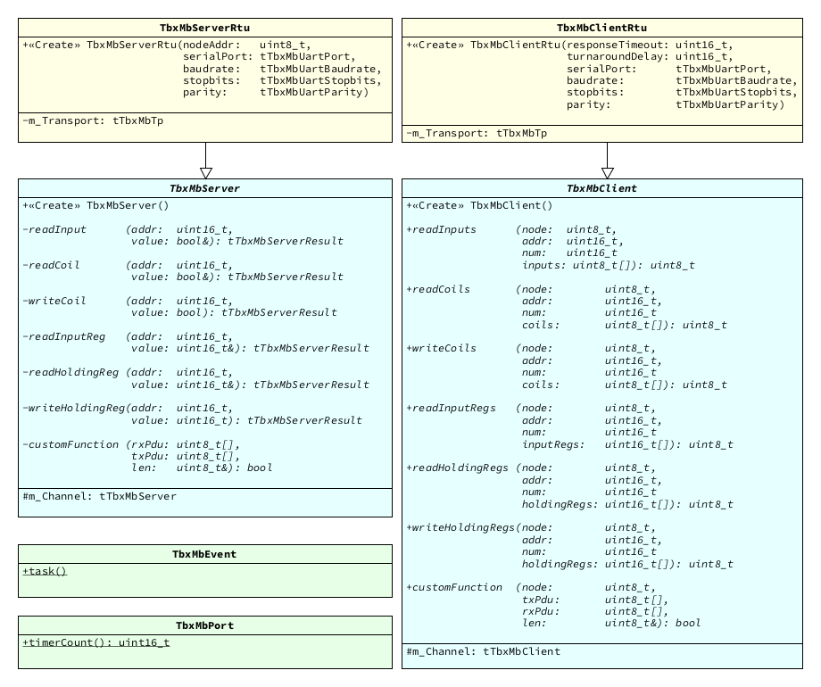

Extra functionality
C++ Wrappers
No exact statistics on C++ usage for embedded systems is available. However, the rough estimation is that somewhere between at least 20% and 50% of all embedded software projects make use of C++. Unfortunately, most embedded components and libraries do not take this into consideration.
This is where MicroTBX-Modbus differs: Its C API was carefully crafted, such that easy-to-use C++ wrappers can encompass its entire functionality. In fact, it's actually easier to code with MicroTBX-Modbus in C++, compared to C. This section presents how to use the included C++ wrappers.
Design
The following illustration presents the UML class diagrams of the C++ wrappers:

Integration
To add the C++ wrappers to your software project, complete the following steps:
- Copy all files from the
source/extra/cplusplus/directory to your project. - Configure your project such that the added
.cppfiles are compiled and linked during a build. - Add the directories that contain the
.hppfiles to your compiler's include search path.
Alternatively, when using CMake to manager your project's build system, add microtbx-modbus-extra-cpp to its target_link_libraries() list.
Add the following lines to each source-file, where you intend to make use of MicroTBX-Modbus:
#include <microtbx.h>
#include <microtbxmodbus.hpp>
Usage
Similar to the getting started instructions, we'll take an empty C++ embedded software application as a starting point:
#include "board.hpp"
void main(void)
{
/* Initialize the clock, enable peripherals and configure GPIO pins. */
Board::Init();
/* Enter the program's infinite loop. */
for(;;)
{
}
}
Modbus server
We'll create a Modbus server step-by-step with the following properties:
- Communication using serial communication in RTU mode:
- Baudrate 19200 bits/second.
- 8 data-bits
- even parity
- 1 stop-bit
- Node address 10.
- 1 coil at address 0 (element number 1), representing an LED.
Create a new class, with a name of your choosing, which derives from TbxMbServerRtu. For example AppModbusServer and located in a header file called appmodbusserver.hpp. In the constructor's initializer list, call the base class constructor to specify the RTU specific properties:
#include <microtbx.h>
#include <microtbxmodbus.hpp>
class AppModbusServer : public TbxMbServerRtu
{
public:
AppModbusServer()
: TbxMbServerRtu(0x0A, TBX_MB_UART_PORT1, TBX_MB_UART_19200BPS,
TBX_MB_UART_1_STOPBITS, TBX_MB_EVEN_PARITY) { }
virtual ~AppModbusServer() { }
};
As a next step, we'll override method writeCoil and implement it such that this Modbus server changes the state of an LED, whenever it receives a coil write request at address 0:
#include <microtbx.h>
#include <microtbxmodbus.hpp>
class AppModbusServer : public TbxMbServerRtu
{
public:
AppModbusServer()
: TbxMbServerRtu(0x0A, TBX_MB_UART_PORT1, TBX_MB_UART_19200BPS,
TBX_MB_UART_1_STOPBITS, TBX_MB_EVEN_PARITY) { }
virtual ~AppModbusServer() { }
tTbxMbServerResult writeCoil(uint16_t addr, bool value) override
{
tTbxMbServerResult result = TBX_MB_SERVER_ERR_ILLEGAL_DATA_ADDR;
/* Request to write the coil at address 0? */
if (addr == 0U)
{
if (value == TBX_ON)
{
Board::LedOn();
}
else
{
Board::LedOff();
}
result = TBX_MB_SERVER_OK;
}
return result;
}
};
That's all there is to developing a Modbus server with the MicroTBX-Modbus C++ wrappers. To actually use this newly created class, create an instance of it and call the event task in the infinite program loop:
#include "board.hpp"
#include "appmodbusserver.hpp"
void main(void)
{
/* Initialize the clock, enable peripherals and configure GPIO pins. */
Board::Init();
/* Create Modbus server instance. */
AppModbusServer modbusServer;
/* Enter the program's infinite loop. */
for(;;)
{
/* Continuously call the Modbus stack event task function. */
TbxMbEvent::task();
}
}
Modbus client
We'll build an application, which implements a Modbus client. It'll behave as the counter part to the Modbus server application. You could take the same approach, were you create a new class, which derives from TbxMbClientRtu. However, since this class does not contain any overridable methods, we can also just directly create a new instance of it:
TbxMbClientRtu modbusClient(1000U, 100U, TBX_MB_UART_PORT1, TBX_MB_UART_19200BPS,
TBX_MB_UART_1_STOPBITS, TBX_MB_EVEN_PARITY);
With the help of method writeCoils, we can request the Modbus server at node address 10 to turn on its LED, located at coil address 0:
uint8_t coils[1] = { TBX_ON };
modbusClient.writeCoils(10U, 0U, 1U, coils);
Here follows the example application with all of this implemented, for completion purposes:
#include <microtbx.h>
#include <microtbxmodbus.hpp>
#include "board.hpp"
void main(void)
{
uint8_t coils[1] = { TBX_ON };
/* Initialize the clock, enable peripherals and configure GPIO pins. */
Board::Init();
/* Create Modbus client instance. */
TbxMbClientRtu modbusClient(1000U, 100U, TBX_MB_UART_PORT1, TBX_MB_UART_19200BPS,
TBX_MB_UART_1_STOPBITS, TBX_MB_EVEN_PARITY);
/* Turn on one coil at address 0 on the server with node address 10. */
modbusClient.writeCoils(10U, 0U, 1U, coils);
/* Enter the program's infinite loop. */
for(;;)
{
}
}
Note that for a Modbus client that uses a superloop OSAL, there is no need to call TbxMbEvent::task(). The methods that communicate with the server block until the transmission completes and a response is received (if applicable). The event task is called internally while blocking.
Convenient and easy, but not optimal from a run-time performance perspective. For this reason, it is recommended to use an RTOS on the Modbus client, instead of a superloop type application. In the case of an RTOS, it is necessary to call TbxMbEvent::task() in a separate task that drives the Modbus stack.